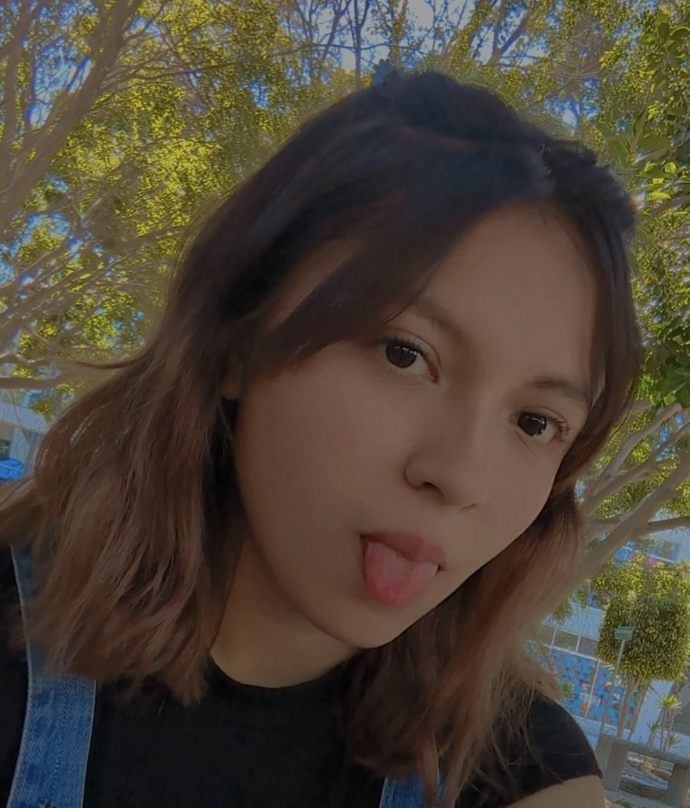
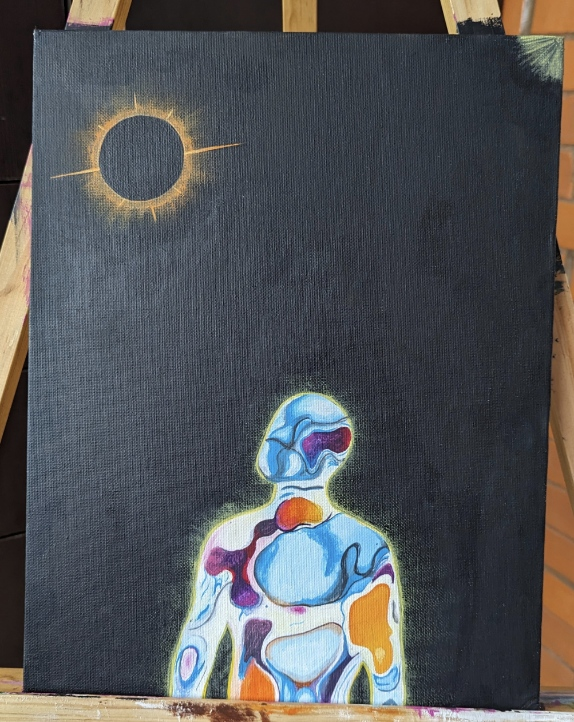

Hola mi nombre es Ana Valadez, soy estudiante de la licenciatura de Diseño Gráfico en la Benemérita Universidad Autónoma de Puebla , actualmente estoy cursando el 7mo semestre de la carrera, tengo 22 años de edad, mi cumpleaños es el 17 de enero. Nací en la ciudad Puebla , viví casi toda mi vida en momoxpan y sus alrededores, mis primeros 3 años de edad los viví en Canada, después volví a México, actualmente resido en Cuautlancingo, este es mi 3er año viviendo acá. El kinder lo cursé en el Instituto Colibrí, hasta 2do de primaria, después estuve cursando el 3ro de primaria hasta 1ro de secundaria en el Instituto Jabes, a mi gusta ha sido la mejor escuela en la que he estado, y después cursé 2do de secundaria y toda la preparatoria en el CENHCH, actualmente estoy estudiando en la BUAP. Soy diseñadora gráfica pero también soy artista, actualmente me dedico a vender cuadros personalizados que me piden las personas, me siento muy feliz de estudiar y dedicarme a lo que me gusta.
Mi familia
Tengo 3 hermanos, uno mayor llamado Christian; de 23 años de edad, y dos menores llamados Dylan; de 20 años de edad, y Said quien es el más pequeño con casi 7 años de edad, mi papá se llama Christian Valadez; tiene 43 años, y mi mamá se llama Carmen Alvízar; tiene 43 años, también tengo un perrito llamado Ethson, tiene 8 años de edad y es un french poodle pequeño. Actualmente tengo novio , se llama José Luis y es estudiante de la licenciatura de Actuaría, igual la está cursando en la BUAP. Mi familia


- Christian Valadez
- Carmen Alvízar
- Christian
- Ana
- Dylan
- Said
Mis hobbies
Algunas de las cosas que me apasionan son el dibujo; sobre todo si son bodegones o paisajes, mi técnica favorita de dibujo es pintar sobre lienzo con acrílicos, igual me gusta mucho pintar cosas realistas con lápices de colores, sigo mejorando y aprendiendo sobre estas técnicas pero igual siento que tengo bien dominadas estas técnicas, otra de las cosas que me apasionan es el diseño, fue por eso que decidí estudiar diseño gráfico, me gusta mucho crear nuevas cosas desde 0, me gustan mucho las manualidades, me encanta la música, siento que es de las cosas que más me inspiran diariamente, me gusta mucho hacer las cosas con música de fondo, mi género favorito es el pop, la trova y las baladas, mi cantante favoita es Ale Zéguer otro de mis hobbies es la cofección de ropa, me gusta cortar mi ropa y darle un nuevo estilo, también me gustan los videojuegos, actualmente ya casi no juego pero el que más me gusta es Valorant, también me gusta leer, mi género favorito son los romances, el último libro que leí se llamó Otra vez tú de Alice Kellen, y... creo que esos son mis hobbies más destacables.
- Dibujar
- Diseñar
- Manualidades
- Música
- Videojuegos
- Leer